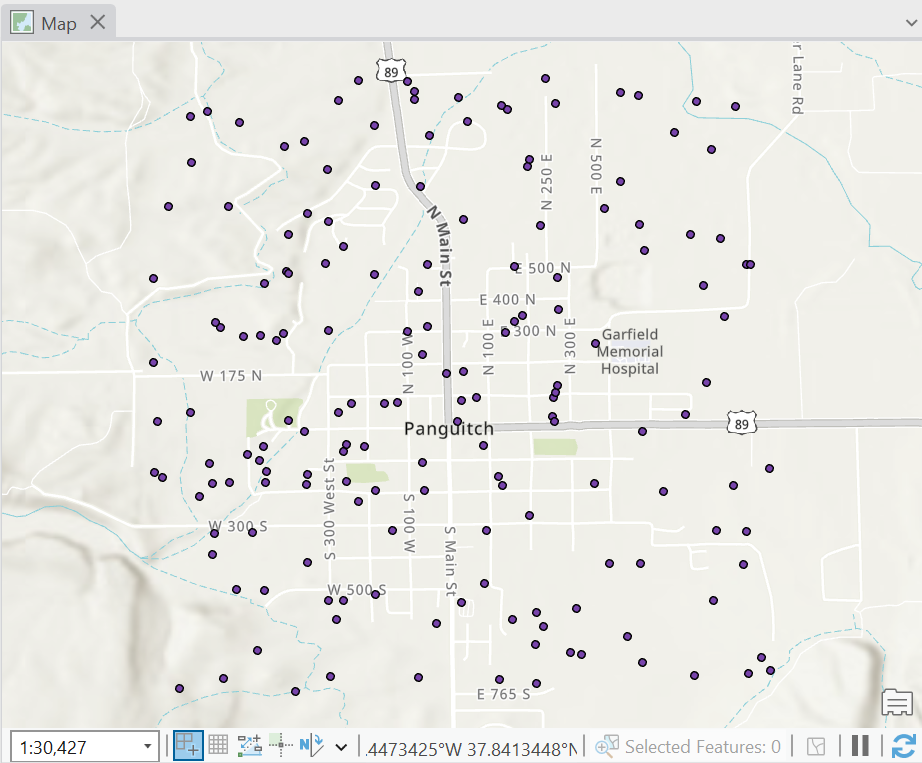
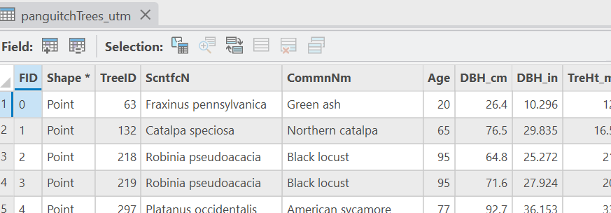
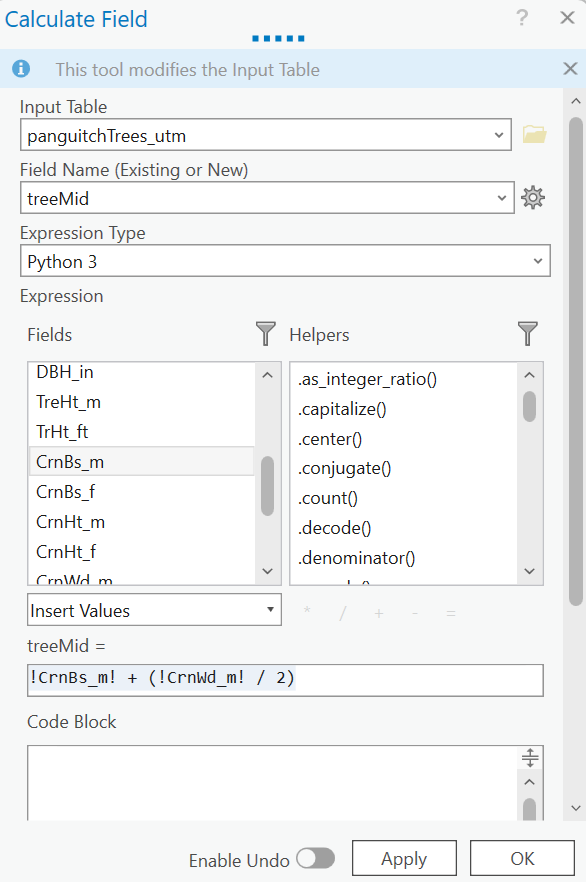
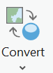
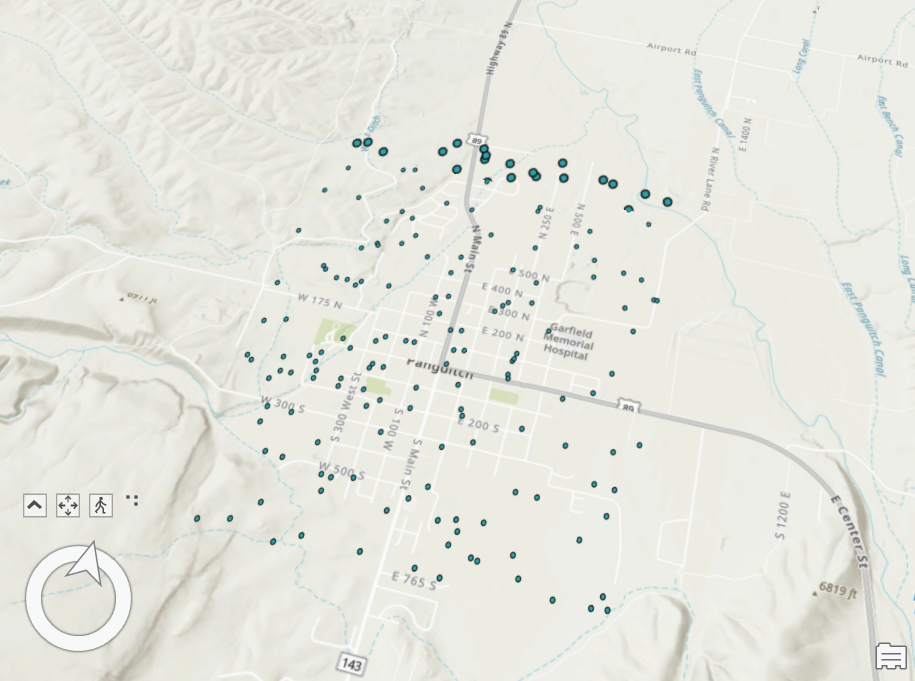
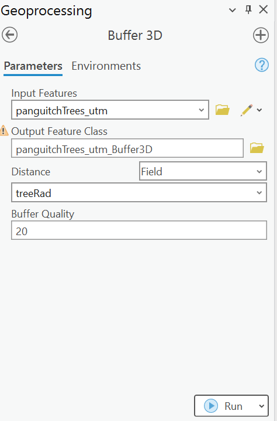
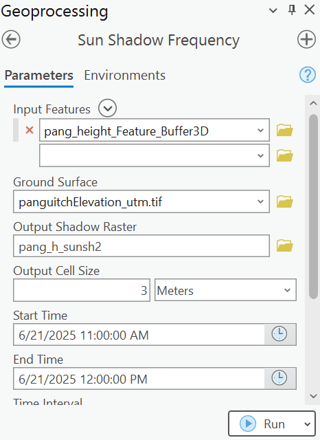
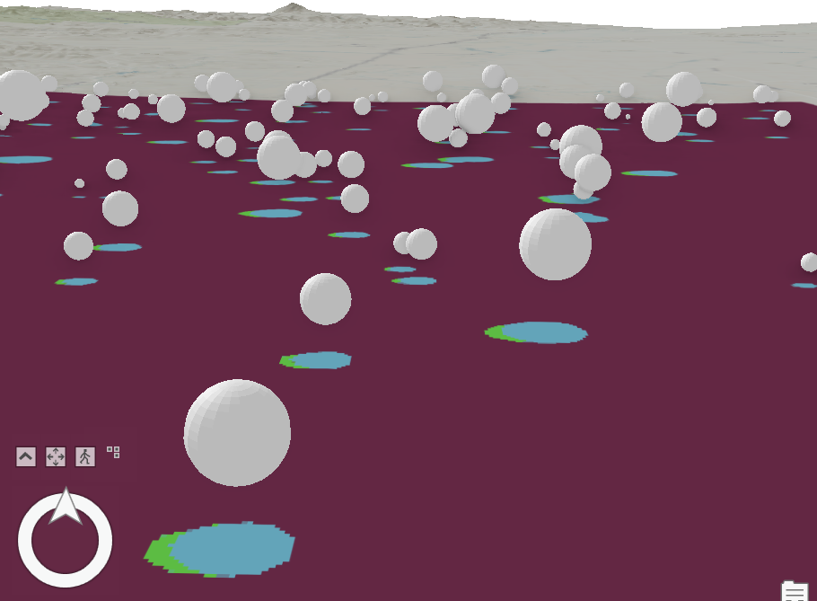

Sun Shadow Analysis
In this brief tutorial, we’ll learn how to make basic 3D models of tree canopies to evaluate shade coverage.
Step 1 Get tree elevation, canopy midpoint and radius
First, add the panguitchTrees_utm shapefile. This is fabricated data: the locations are randomly drawn coordinates over the town of Panguitch, UT.

- Open the attribute table. The attribute data used here is drawn from a real tree inventory conducted in Boise, Idaho.

We’ll use these to calculate two values we will need to build our models: the midpoint of the canopy, and the radius of the canopy.
Click Add Field to create two new fields: treeMid and treeRad . Make these store Double values. Close the Fields table, and be sure to save changes when asked.
Scroll to the far right of the table to find the new fields. Right-click on the header for the treeMid field and select Calculate Field. For this value, we want to get the crown base height (the distance from the ground to the bottom of the canopy) and add half of the crown width, which will serve roughly as the diameter of the canopy.. The formula for this should look like this:
!CrnBs_m! + (!CrnWd_m! / 2)

- Click OK. Now the treeMid field should have values reflecting the midpoint of the canopy. To calculate treeRad, follow the same steps, but only use half the value of the crown width:
(!CrnWd_m! / 2) - Finally, add the panguitchElev_utm.tif raster. This is elevation data from the National Map for the area around Panguitch. Go to the Geoprocessing toolbox and search for Extract Values to Points. Use the tree points as the Imput features and the elevation data as the Input raster. Select Append all the input raster attributes… and Click OK. This will extract elevation values into and add them as a column to the tree data, and save this as a new feature class.
Step 2 Convert points to 3D buffers
Now we have the values we need, and we can turn these into 3D models of tree canopies.
- First, go to the View ribbon, and find the Convert button.

- Click this button an select To Local Scene. This will render the 2D scene we’re looking at now in a 3D space.

- The controls at the bottom left will let you change the view of the data in 3D. If you click the ^ button here, it will give you more controls to work with.

- In the Table of Contents, drag the Panguitch elevation data down into the Elevation Surfaces group under the Ground heading. Untick the Terrain 3D option. This will make the elevation data serve as the elevation of the ground surface.
- Go to the Geoprocessing toolbox and search for Features to 3D by Attribute. This tool translates 2D data to 3D data by assigning it a height from an attribute field in the data. Here, we will create this from the data we created when we extracted values from the elevation data. Select this data as the Input Features, and save the Output Feature Class using the default or another name that makes clear this is the 3D version of the data. For Height, select the field storing the elevation data that was extracted (if you didn’t change it, it’s likely under the RASTERVALU field). The To Height value is only for line data, so this can be left blank. Click OK and let this run.

- Go to the Geoprocessing toolbox and search for the Buffer 3D tool. This will let us create spherical buffers around our points. Use our tree points as the input features. For Distance, select Field, and choose the treeRad field to create buffers with a radius equal to half the crown width. You can leave the Buffer Quality with the default value.

Click OK. You might see a new layer in your Table of Contents pane, but you probably don’t see anything in the Map view. That’s because at the moment, the buffers aren’t set to have an elevation relative to the ground surface here.
Right click on the buffer layer in the Table of Contents and select Properties. Select the Elevation controls. We want to set the elevation Relative to the Ground, and derived from a Field, which is treeMid. This will position the center of the buffer at the height we calculated for the middle of the crown. Leave the remaining values at the defaults and click OK.
- Now we have what look like golfballs hovering above our tree points!
Step 3 Calculate sun shadow frequency
The last step uses the Sun Shadow Frequency tool to calculate areas of the ground that will be in shade at different times of day. This draws on estimates of the sun’s location in the sky over a given timeframe.
Find the Sun Shadow Frequency tool. Set the Input Features to be the new 3D buffers. Set the Ground Surface to be the Terrain3D elevation surface (you could use a custom elevation dataset for the ground if you have one). Output Cell Size is the size of the raster your analysis will create; I recommend using a value that is not so small that it will take forever to run the analysis, but not so large as to be meaningless relative to how large shadows may be.
Set the Start Time and End Time. For your first analysis, I would start with a few hours in a single day. These calculations need to be run for each of the buffers and, depending on the computer, this can take awhile.
Set the Time Interval. If you’re working at the hourly scale, set this to 1 hour.
Because shadows can theoretically extend over very long distances when the sun is low in the sky, dragging out the computations required, it makes sense to set a Maximum Shadow Length. I would use something like 50 meters.

- Click OK. Depending on the settings you used, this may take some time to run. You should eventually see something that looks like this:

The result is a raster showing the number of hours a given patch of surface is in shadow.